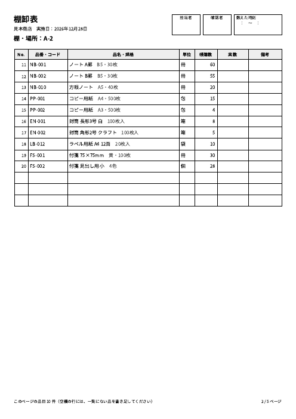

棚卸の記入用シート印刷
Excel や CSV の商品一覧から、棚卸で数を書き込むための表（棚卸表）を A4 に印刷するツールです。棚や分類が変わるところで改ページするので、棚ごとに紙を配って数えてもらえます。数えたあとは、紙に書いた数を入力すると、帳簿の数との差を付けて CSV に保存できます。ソフトのインストールは不要で、いつものブラウザで動きます。
500円（税込・買い切り）
お試し版はすべての機能を使えて、印刷は先頭1ページ、実数の CSV 保存は先頭10行までです。決済が終わると、そのまま製品版の画面に移動します。ブックマークしておけば何度でも使えます。

見本のデータで印刷した例（棚 A-2 のページ）。品番・品名は説明のための見本です。
こんなときに
- 年末・期末の棚卸の前に、記入用の一覧を表計算で整えて印刷するのに毎回時間がかかる
- Excel で印刷すると、棚の途中でページが切れたり、見出しが2ページ目から消えたりする
- 何人かで手分けして数えるので、棚ごとに紙を分けて、担当者の名前を書いてもらいたい
- 数えた数を帳簿と見比べて、差があるものだけ数え直したい
できること
- 読み込み：Excel（.xlsx）・CSV（UTF-8／Shift_JIS を自動判定）・表の貼り付け。「棚番」「品番」「商品名」「単位」「在庫数」などの見出しから列を自動で選びます（選び直し可）
- まとめて改ページ：棚・場所ごと、または分類ごとに分け、変わるところで改ページ。改ページしない場合は見出しの行を入れます。まとまりの順番（一覧に出てきた順／A-2 → A-10 の順）と、中の順番（一覧のとおり／品番順／品名順）を選べます
- 表の体裁：通し番号・品番・品名と規格・単位・実数の記入欄・備考欄。各ページに題・店名・実施日・担当者と確認者の欄・数えた時刻の欄・「何ページ中何ページ目」が付きます
- 書き込みやすさ：1行の高さを 7〜12mm から選べます。A4 縦・横。長い品名は文字を小さくするか2行にして欄に収めます
- 帳簿の数：印刷する・しないを選べます（帳簿の数を見ずに数えたいとき用）。差異の記入欄も付けられます
- 空欄の行：まとまりごとに3行・5行の空欄を付け、一覧にない品を書き足せます
- 実数の入力と保存：紙に書いた数を画面で入力（Enter で次の行）。帳簿との差をその場で表示し、「差があるものだけ」「未入力だけ」で絞り込めます。元の表に「実数」「差異」の列を足した CSV（Excel で開ける形式）で保存し、その CSV を読み込めば続きから入力できます
できないこと（購入前にご確認ください）
- 在庫の金額（評価額）の計算や、会計・税務の処理はしません。数を書く表と、数の差を出すところまでです
- バーコードの読み取りや、在庫管理システムへの直接の書き戻しはできません（保存した CSV をお使いのシステムの取込に合わせてください。列の並べ替えは 列そろえ でできます）
- Excel の読み込みは1枚目のシートだけです。セルの結合や数式の入った表は、値だけの一覧にしてから読み込んでください
- 入力した実数はブラウザに保存しません。ページを閉じる前に CSV に保存してください
- 印刷の仕上がりはプリンターの設定によって変わります。お試し版で1ページ印刷してみることをおすすめします
- スマートフォンでは操作しにくいため、パソコンでお使いください
よくある質問
| Excel の印刷と何が違いますか？ | Excel でも、棚の列で並べ替えてから「データ」→「小計」で「グループごとに改ページを挿入する」を選び、「ページレイアウト」→「印刷タイトル」で見出しの行を指定すれば、棚ごとに印刷できます。その場合は小計の行が入るので、印刷後に「すべて削除」で元に戻します。このツールは棚・分類の列を選ぶだけで改ページし、ページごとに棚の名前・担当者欄・空欄の行・ページ番号を付け、元の表は変えません。 |
|---|---|
| データはどこかに送られますか？ | 送られません。読み込み・印刷・CSV の保存は、すべてお使いのブラウザの中で行います。 |
| 何件まで使えますか？ | 製品版は件数の制限はありません。数千件の一覧でも動きますが、パソコンの性能によっては表示に時間がかかります。 |
| 印刷すると表が小さくなります | 印刷画面で倍率を「100%（実際のサイズ）」にし、余白を「なし」にしてください。 |
| 来年も使えますか？ | 買い切りです。決済後の画面をブックマークしておけば、次の棚卸でもそのまま使えます。 |
安心してお使いいただくために
- 商品の一覧はお使いのブラウザの中だけで処理し、サーバーには送信しません
- 動作環境：最新版の Chrome・Safari・Edge・Firefox（パソコン）
- 説明どおりに動かない場合は、ご購入から7日以内にご連絡いただければ返金します